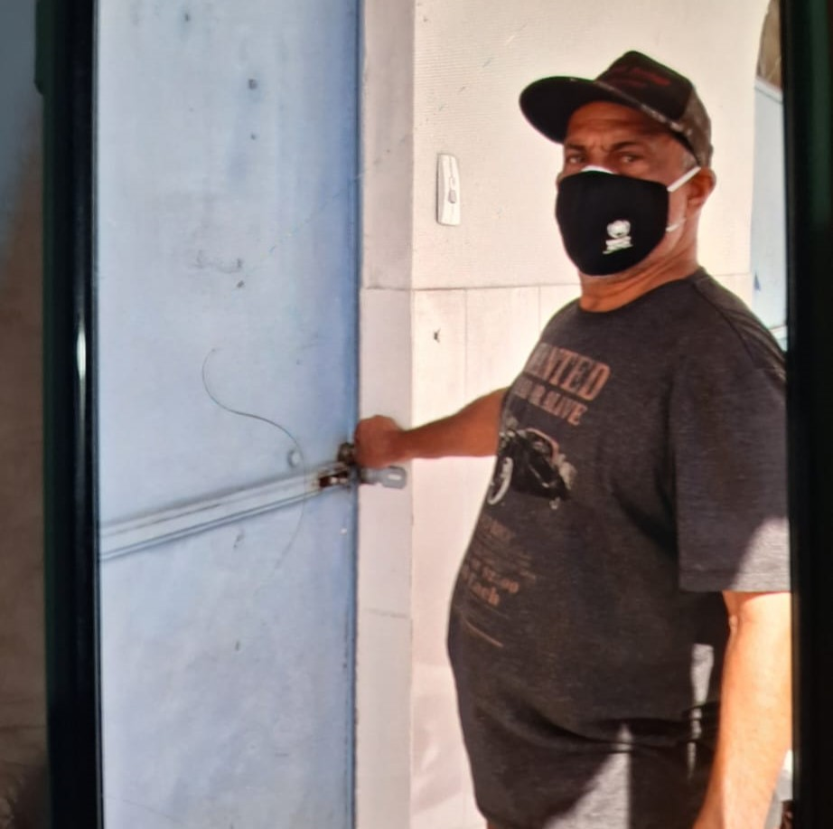

Assistidos
A Casa Cidadã tem o orgulho de compartilhar o impacto positivo gerado nas vidas dos moradores que acolhemos, com respeito absoluto à sua privacidade. Aqui, apresentamos histórias de superação e nossos principais números:
Total de Pessoas Acolhidas: +9
Pessoas que Reconquistaram a Autonomia Financeira até o momento: +4
Pessoas que Reconquistaram a Autonomia Social: +3
Histórias de Superação
Conheça algumas das histórias de pessoas que, com o apoio da Casa Cidadã, encontraram uma nova oportunidade de vida.
Aparecida e sua vida nova

Aparecida, viúva de 65 anos e mãe de 8 filhos, foi colocada nas ruas pelos filhos após a morte do marido e a venda da casa. Após um ano nas ruas, conheceu Itamar, que vivia há 20 anos nas calçadas e se tornou seu companheiro e protetor. Em abril de 2024, Aparecida foi apresentada à Casa Cidadã pela Débora, do Aluguel Solidário, através de um vídeo gravado na calçada da rua Rio de Janeiro, onde ela e Itamar dormiam em uma barraca.
Ao encontrá-la, a aparência de Aparecida surpreendia, pois, apesar das dificuldades, mantinha-se asseada e com roupas limpas, demonstrando calma e tranquilidade. A partir de então, as coisas começaram a se acelerar. Em maio de 2024, Aparecida visitou alguns imóveis com auxílio da Casa. Desde então, Aparecida e Itamar já não dormem nas calçadas da cidade e buscam retomar a cidadania plena o mais rápido possível.
Em novembro de 2024, Aparecida e Itamar já pagam as contas de água e luz, e ela comprou um tanquinho, que já está quitado. A casa ainda está sendo mobiliada conforme seus gostos, com as paredes decoradas pela artista plástica Mariangela. O mais importante é que duas de suas filhas já retornaram para o convívio com ela.
Celis José e seu "Dia de Princesa"
Celis hoje paga o próprio aluguel e mantém um trabalho de carteira assinada, graças à sua inclusão no projeto Casa Cidadã, baseado na tecnologia social Housing First, que busca resgatar a dignidade e a cidadania de pessoas em situação de rua, começando com a oferta de uma casa e acompanhamento para a reconstrução de uma vida segura e estável.
Antes disso, Celis viveu anos nas ruas, dormindo em abrigos e passando os dias em salas de espera de UPAs para se proteger. Ele sonhava em retomar a vida com uma casa e um trabalho e já se preparava mentalmente para essa transformação. Com o apoio de doações e parceiros, conseguimos encontrar um lar ideal para ele, e logo os documentos foram assinados.
Um outro grupo de ajuda, o Aluguel Solidário, conectou Celis a um empresário em busca de funcionários, garantindo a tão sonhada vaga de trabalho. No mesmo dia em que conseguiu a casa, ele começou no novo emprego.
Durante o almoço para celebrar essa conquista, Celis percebeu que fazia anos que usava apenas talheres de plástico e se emocionou ao segurar talheres de metal, sentindo que sua vida estava realmente mudando. Ele descreveu esse momento como seu "Dia de Princesa", comparando-o a uma transformação digna de um programa de TV.
Como Selecionamos os Beneficiários?
Selecionamos beneficiários com base em um perfil pré-estabelecido, preferencialmente indicados por outra organização ou agente social.
Optamos por um perfil de assistido que tenha condições de recuperar a capacidade laborativa de curto prazo, ou daqueles indivíduos que tenham direito a algum benefício previdenciário que lhes permita arcar com todas as suas despesas rapidamente.
Realizamos uma entrevista com o candidato, buscando conhecer mais sobre a vida e as aspirações da pessoa. A seguir, explicamos detalhadamente a proposta de acolhimento, deixando claro o respeito às escolhas de vida do assistido.
São combinadas as condutas desejáveis, as condutas permitidas e aquelas indesejáveis. Também deixamos combinadas as regras de permanência e desligamento do programa, deixando clara a necessidade de respeito ao apoio e ao aporte financeiro dos doadores. Todo o mobiliário disponibilizado, oriundo de doações, pertence à Casa Cidadã, até que ocorra o desligamento financeiro após 1 ano.
A Casa Cidadã acredita que cabe aos assistidos a tutela sobre o seu plano de vida, por isso os assistidos são alertados de que depende exclusivamente deles o sucesso da empreitada. É importante que ele se sinta responsável pelo seu caminhar.
Quer saber mais?
Nosso trabalho é guiado pela dedicação em devolver a dignidade, a autonomia e o apoio necessário para que nossos assistidos alcancem uma vida plena. Entre em contato conosco para conhecer outras histórias e saber como você pode contribuir para a transformação de vidas.
Doe Agora Seja Voluntário